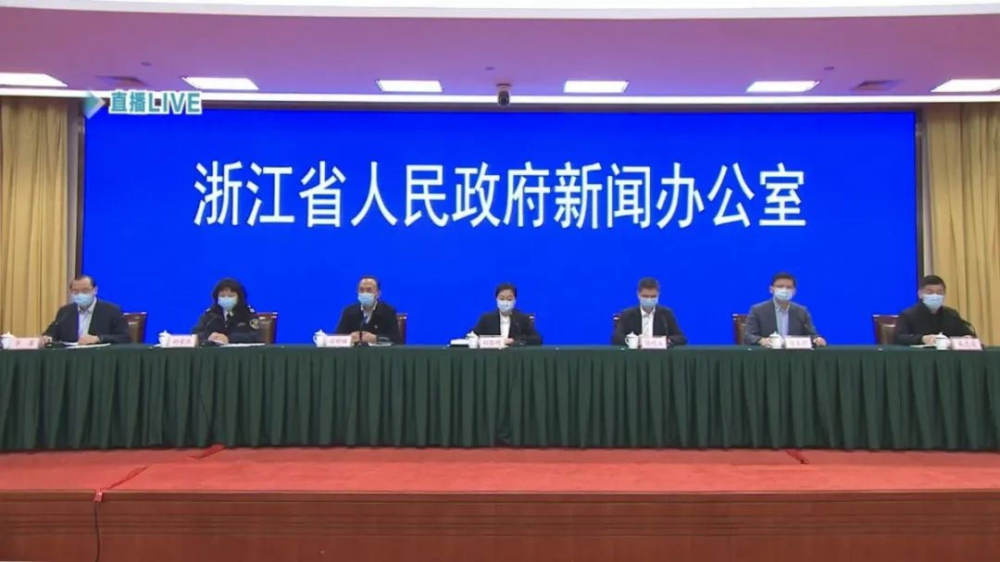

数说疫情0221：武汉疫情出现重要转折，战局由防守转为全面进攻
原文链接 备份链接 _ 武汉新增确诊病例和新增治愈病例今日跨过“黄金交叉”点，从此全国包括武汉在内将逐日加大释放以医院病床床位为核心的医疗资源。但也应注意到2月20日数据出现两个异常：一是非湖北地区新增病例出现巨大反弹；二是国家卫健委与湖 …
澎湃新闻记者 陈雅儒
2月21日，澎湃新闻从浙江省新冠肺炎疫情防控工作新闻发布会（第二十六场）获悉，截至2020年2月20日24时，浙江省报告新增确诊病例28例，死亡1例，出院38例。其中新增确诊病例中宁波市1例，省十里丰监狱27例。

在答记者问时，浙江省司法厅副厅长徐晓波介绍，十里丰监狱一名民警在1月14日至19日去了武汉，但刻意隐瞒继续上班，至1月25日深夜被发现，1月29日确诊为新冠肺炎。
“我们在1月30日公布了该病例，虽然在专家指导下，及时做了消杀隔离等防控工作，但民警上班时间长，密切接触者多，造成了多名罪犯感染。”徐晓波说。

据介绍，1月30日，省十里丰监狱发现一例罪犯确诊病例，1月31日向社会公布。2月10日，发现6例确诊病例，2月11日向社会公布。2月20日，发现27例罪犯确诊病例，并于今天公布，共有罪犯确诊34例，其中重症病例一例，没有死亡案列。目前，未发现疫情从监狱内向监狱外扩散。
发现疫情后，浙江省十里丰监狱主要做了以下工作：
一、严格落实隔离措施，监狱实行全封闭管理，所有罪犯一人一间隔离；
二、严格开展核酸检测和流调工作，对疫情监区所有罪犯和民警，实行全员核酸检测；
三、执行公共卫生标准，严格按标准消杀垃圾、对污水分类处理等，坚决阻断扩散渠道；
四、严格追责问责我厅已派出督察组进驻省十里丰监狱现场督查，监狱长已被免职，公安机关对一名涉事民警立案调查。
戳这里进入
“全国新型冠状病毒感染病例实时地图”↓↓↓
本期编辑 邢潭
推荐阅读


原文链接 备份链接 _ 武汉新增确诊病例和新增治愈病例今日跨过“黄金交叉”点，从此全国包括武汉在内将逐日加大释放以医院病床床位为核心的医疗资源。但也应注意到2月20日数据出现两个异常：一是非湖北地区新增病例出现巨大反弹；二是国家卫健委与湖 …
原文链接 备份链接 岛语 非常时期，武汉成了全国人民挂念、祈福的城市。封城后，武汉人民的真实生活是什么样？ 武汉在发生哪些变化？ 正和岛自1月26日起特别推出“叶青专栏”。叶青是一位定居武汉40年的市民，也是一名学者和官员。在过往多期的专 …
原文链接 备份链接 文 |《财经》数据研究员 徐进 图 |《财经》视觉中心 编辑 | 谢丽容 1. 新增病例：国内非湖北地区下降态势坚定 2月13日0—24时，全国新增确诊病例5090例，国内非湖北地区已经连续十天下降，超过两个平均潜伏 …
原文链接 备份链接 岛语 非常时期，武汉成了全国人民挂念、祈福的城市。封城后，武汉人民的真实生活是什么样？ 武汉在发生哪些变化？ 正和岛自1月26日起特别推出“叶青专栏”。叶青是一位定居武汉40年的市民，也是一名学者和官员。在过往多期的专 …
原文链接 备份链接 澎湃新闻记者 刘栋 实习生 董安琪 新冠病毒疫情在韩国的发展突然加速。 2月20日，韩国新增53例确诊病例，超过了过去一个月所有确诊病例总和。21日上午，韩国疾病预防控制中心（KCDC）最新通报称，再新增52例确诊病 …